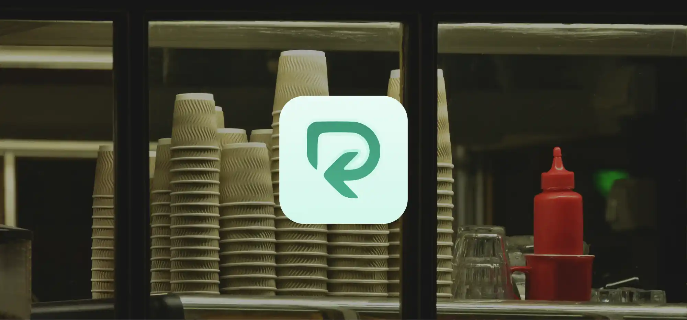
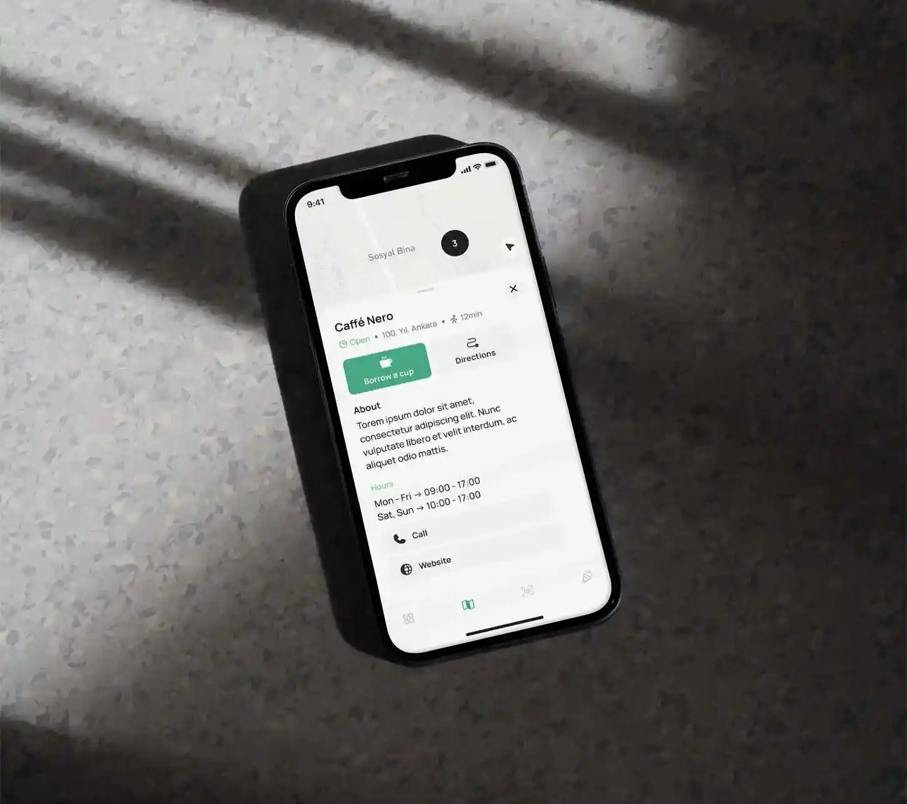

Timeline
2024
2024
Role
UX/UI Designer
Prototyping
UX/UI Designer
Prototyping
Client
Refresh the Future
Refresh the Future
Collaborators
Emre Şahin
Onat Aşık
Emre Şahin
Onat Aşık
What was the goal?
Creating multi-purpose app for recycling, reusing and returning cups in festivals and coffeeshops.
Creating multi-purpose app for recycling, reusing and returning cups in festivals and coffeeshops.
Scope of the project
Within the techincal restrictions of making a project for an already existing ecosystem, we needed to adapt to how we can make sure both parties, the customer (pets and owners) and the provider (airline) communicate on longer flights. During the 1 week duration, we did User Research on existing TA customers with pets, Brainstorming sessions to synthesize the results and Flow trees to asses possible points of intervention.
